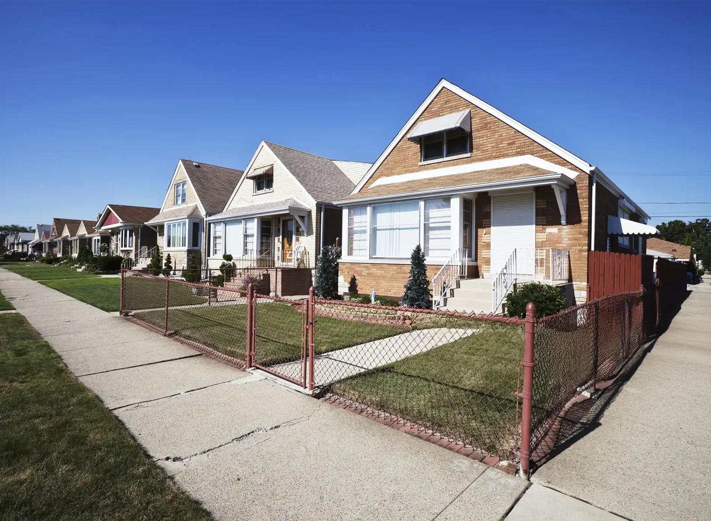

Project Overview
A premium residential development of more than 2,000 homes in the Asia Pacific region required a fencing solution that balanced security with exceptional aesthetic appeal. As a flagship master-planned community, the project demanded perimeter security that would protect residents while enhancing the architectural character and landscape design of the neighbourhood.
Kestrel Metal was engaged to supply decorative powder-coated welded mesh panels, automated gates, and integrated entrance solutions across the development. The goal was to create a cohesive, elegant perimeter language that delineated private and public spaces, controlled vehicular and pedestrian access, and reinforced the premium identity of the community.
The project required materials engineered to maintain their appearance over decades of exposure to coastal and urban environmental conditions. Superior corrosion resistance, colour retention, and low maintenance were essential to preserve the community's high-end aesthetic throughout its service life.

The Challenge
Residential community fencing presents a unique design challenge: achieving robust perimeter security without adopting the industrial appearance of conventional security fencing. The client required a system that felt welcoming and refined, while still providing genuine deterrence against intrusion and clear definition of the community boundary.
The development's varied terrain and landscape-integrated design meant that straight, uniform fencing would not suit every section. The fencing needed to follow curving streetscapes, blend with landscaped boulevards and green corridors, and adapt to different security requirements at entry points, boundaries, and amenity areas without compromising visual consistency.
Access control was a further consideration. The primary entrances required automated gates capable of managing high volumes of residents and visitors, integrated with the security philosophy of the entire community. The gates needed to be reliable, safe, and seamlessly integrated with the surrounding fencing and landscaping to maintain the development's premium appearance.
Our Solution
Kestrel Metal supplied decorative powder-coated welded mesh panels finished in a carefully selected RAL colour palette that complemented the community's architectural and landscape design. The powder-coated finish provides a smooth, consistent, and durable surface with excellent colour retention, delivering an elegant appearance while resisting corrosion, UV degradation, and everyday wear.
The welded mesh panels were configured in varying heights and layouts to respond to the specific security and aesthetic requirements of each boundary zone. Along public streetscapes, the fencing presented a refined and open appearance that maintained sightlines and visual appeal, while at sensitive boundaries and amenity areas, increased panel density and elevation delivered enhanced privacy and security.
Automated gates were installed at the primary community entrances, engineered for reliable high-frequency operation and seamless integration with the access control systems of the development. Each gate was finished to match the surrounding powder-coated panels, creating a unified, high-end entrance experience that reinforced the premium identity of the community from the very first impression.
The modular design of the panel system allowed efficient phased installation across the large site, working alongside the ongoing landscape construction. The completed fencing and gate system delivers a secure, welcoming, and visually cohesive perimeter that enhances property values and demonstrates how high-specification steel fencing can elevate a premium residential community.
Products

Powder-Coated Welded Mesh Panel
- Decorative welded mesh panel finished with a durable powder-coated surface in a range of RAL colours
- Smooth, corrosion-resistant finish with excellent colour retention for long-term aesthetic appeal
- Combines security, privacy, and design flexibility for residential, commercial, and landscape applications
- Modular design for efficient installation while maintaining visual consistency across large developments

Automated Security Gate
- Engineered automated gate system for reliable high-frequency operation at community entrances
- Seamless integration with access control and security systems for controlled vehicular access
- Factory-finished to match surrounding fencing for a unified, high-end entrance experience
- Robust construction with safety features for smooth, dependable, long-lasting operation
Interested in decorative fencing for your residential development or community project? Contact our engineering team to discuss your design and security requirements. Request a Quote